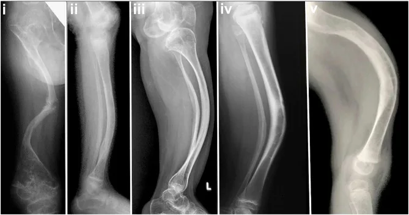
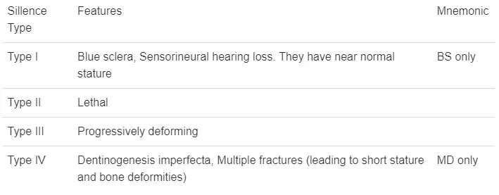
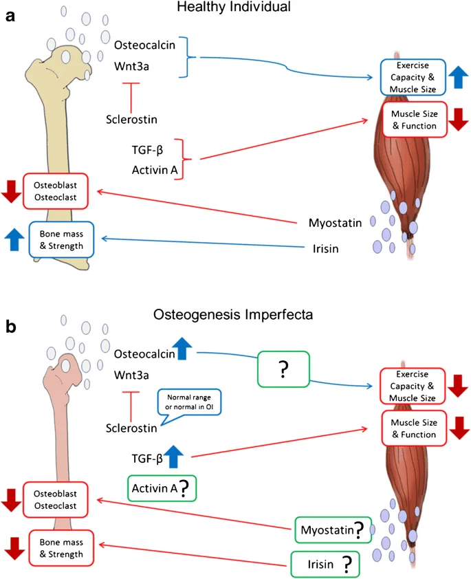
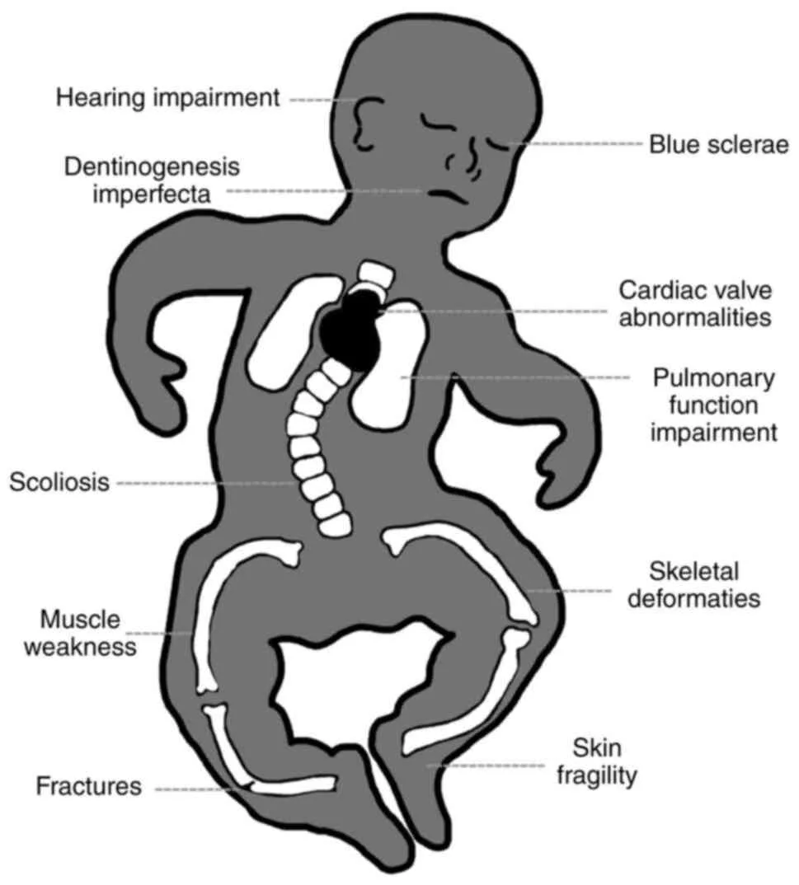

Expanded Nursing Uganda Explanation
Osteogenesis Imperfecta should be understood beyond a short definition. Link the concept to patient history, focused assessment, common risks, nursing priorities, documentation and evaluation of outcomes.
01 Overview
Osteogenesis Imperfecta (OI), often colloquially known as "brittle bone disease," is a rare, inherited genetic disorder primarily characterized by bone fragility that leads to recurrent fractures, often with minimal or no trauma. It is a lifelong condition that can range in severity from very mild, with only a few fractures over a lifetime, to extremely severe, leading to hundreds of fractures, severe deformity, and even perinatal lethality.
Osteogenesis imperfecta (OI) also known as brittle bone disease, is a genetic disorder characterized by fragile bones that break easily.
Osteogenesis imperfecta is a disorder of bone fragility chiefly caused by mutations is the COL1A1 and COL1A2 that encode type I procollagen.
- Genetic Basis: OI is caused by defects in the genes responsible for producing Type I collagen . Type I collagen is the most abundant protein in the human body and is the primary structural protein found in bone, skin, tendons, ligaments, and sclerae.
- Primary Defect: The fundamental problem in OI is either a deficiency in the quantity of Type I collagen or, more commonly, a defect in the quality/structure of the Type I collagen produced.
- Impact on Bone: Because Type I collagen is crucial for the strength and flexibility of bone, these defects result in bones that are thin, poorly formed, and abnormally fragile, making them prone to fracture. OI affects both bone quality and bone mass.
- Systemic Disorder: While bone fragility is the hallmark, OI is a systemic connective tissue disorder . This means that other tissues rich in Type I collagen can also be affected, leading to a variety of extra-skeletal manifestations such as blue sclerae, hearing loss, dentinogenesis imperfecta (brittle teeth), joint hypermobility, and sometimes cardiovascular or respiratory issues.
- Inheritance Pattern: Most forms of OI are inherited in an autosomal dominant manner, meaning only one copy of the defective gene is needed to cause the condition. However, some rarer forms can be autosomal recessive or sporadic (new mutation).
Osteogenesis Imperfecta is a heterogeneous disorder, meaning it encompasses several types, each with different clinical presentations, genetic mutations, and prognoses. The most widely recognized classification system is the Sillence Classification , which initially described four main types (Type I-IV) and has since expanded to include more (Type V and beyond) as our understanding of the genetic basis has grown.
OI type 1 is sufficiently mild that is often found in large pedigrees. Many type 1 families have blue sclerae, recurrent fractures in childhood and presenile hearing loss (30%-60%). Other possible connective tissue abnormalities include hyperextensible joints, easy bruising, thin skin, scoliosis, hernia and mild short stature compared with family members.
- Genetic Basis: Usually autosomal dominant, often due to a quantitative defect in Type I collagen (reduced amount of structurally normal collagen). Often involves mutations in COL1A1 or COL1A2 .
- Clinical Features: Mild bone fragility: Few fractures, primarily before puberty.
- Normal or near-normal stature.
- Blue sclerae (the white part of the eye appears blue due to thinness, allowing choroidal veins to show through) are very common.
- No bone deformity or very mild deformity.
- Dentinogenesis imperfecta (DI - brittle, discolored teeth) is rare but can occur.
- Early adult hearing loss (conductive or sensorineural) is common.
- Joint hypermobility.
- Prognosis: Good, with near-normal life expectancy.
Infants with OI type II maybe stillborn or die in the first year of life. Birth weight and length are small for gestational age. There is extreme fragility of the skeleton and other connective tissues. There are multiple intrauterine fractures of long bones which have a crumpled appearance on radiographs. There are striking micromyelia and bowing of extremities; the legs are held abducted at right angles to the body in the frog leg position. The skull is large for body size, with enlarged anterior and posterior fontanels. Sclerae are dark blue-grey.
- Genetic Basis: Usually autosomal dominant, typically a de novo (new) mutation in COL1A1 or COL1A2 , resulting in a severe structural defect in Type I collagen.
- Clinical Features: Extremely severe bone fragility: Multiple fractures in utero and at birth.
- Severe bone deformity: Short, bowed limbs, broad long bones, beaded ribs.
- Small, underdeveloped lungs (pulmonary hypoplasia) due to thoracic deformity.
- Blue sclerae.
- Often born prematurely.
- Prognosis: Usually lethal in the perinatal period (before or shortly after birth) due to respiratory failure.
OI type III is the most severe non-lethal form of OI and results in significant physical disability. Birth weight and length are often low normal. Fractures usually occur in utero. There is a relative macrocephaly and triangular faces. Disorganization of the bone matrix results in a “popcorn” appearance at the metaphysis. All type III patients have extreme short stature. Dentinogenetic imperfecta, hearing loss and kyphoscoliosis may be present or develop over time.
- Genetic Basis: Most commonly autosomal dominant ( de novo mutations in COL1A1 or COL1A2 ), but can also be autosomal recessive. Characterized by a severe qualitative defect in Type I collagen.
- Clinical Features: Severe bone fragility: Multiple fractures, often present at birth, and continuing throughout life.
- Progressive bone deformity: Severe limb bowing, kyphoscoliosis (spinal curvature), short stature.
- Very short stature.
- Blue, grey, or purple sclerae.
- Dentinogenesis imperfecta is very common.
- Hearing loss is common.
- Large head relative to body size.
- Prognosis: Significant physical disability; often wheelchair-dependent. Life expectancy is variable, often reduced due to respiratory and cardiac complications.
Patients with OI type IV can present with utero fractures or bowing of lower long bones. They can also present with recurrent fractures after ambulation and have normal to moderate short stature. Most children have moderate bowing even with infrequent fractures. Children with OI type IV requires orthopaedic and rehabilitation intervention. Fracture rates decrease after puberty. Radiographically they are osteoporotic and have metaphyseal flaring and vertebral compressions. Patients with type IV have moderate short stature. Scleral hue maybe blue or white.
- Genetic Basis: Usually autosomal dominant, often due to a qualitative defect in Type I collagen (abnormal collagen structure), commonly involving COL1A1 or COL1A2 mutations.
- Clinical Features: Moderate bone fragility: Variable number of fractures, often improving after puberty.
- Variable stature: From near-normal to moderately short.
- Normal or faintly blue sclerae.
- Dentinogenesis imperfecta is common.
- Hearing loss is common.
- Mild to moderate bone deformity.
- Prognosis: Variable, generally good with appropriate management, allowing for ambulation and independent living in many cases.
As genetic research has advanced, many other types of OI have been identified, often involving mutations in genes other than COL1A1 or COL1A2 , which affect collagen processing or bone mineralization. These are generally rarer and include:
- OI Type V: Characterized by calcification of the interosseous membrane (between forearm bones), radial head dislocation, and a mesh-like appearance on bone biopsy. Normal sclerae, no DI. Often moderate severity.
- OI Type VI: Moderate severity, distinct bone histology (fish-scale appearance on bone biopsy), normal sclerae, no DI.
- OI Types VII & VIII: Often recessively inherited, due to defects in genes encoding proteins involved in collagen post-translational modification. Can range from severe to perinatal lethal.
The etiology (cause) of Osteogenesis Imperfecta is almost exclusively genetic , stemming from mutations in genes that are critical for the production or processing of Type I collagen .
- Primary Genes ( COL1A1 and COL1A2 ): The vast majority (around 85-90%) of OI cases are caused by mutations in one of the two genes responsible for coding for Type I collagen: COL1A1 : Encodes the alpha-1 chain of Type I collagen.
- COL1A2 : Encodes the alpha-2 chain of Type I collagen.
- Other Genes: More recently, mutations in over 20 other genes have been identified that cause various types of OI (e.g., Type V and beyond). These genes are involved in the post-translational modification (e.g., hydroxylation, glycosylation), folding, or processing of Type I collagen, or in bone mineralization. Examples include CRTAP, LEPRE1, P3H1, PPIB, SERPINH1, BMP1, FKBP10, PLOD2, WNT1, IFITM5 , etc. Significance: These "non-collagen" gene mutations highlight that even if the collagen chains themselves are correctly coded, problems in their assembly or maturation can still lead to OI.
- Autosomal Dominant (Most Common): A single mutated copy of COL1A1 or COL1A2 is sufficient to cause the disease. This is the pattern for OI Types I, II, III, and IV.
- Often, one parent has the condition, and there's a 50% chance for each child to inherit it.
- De Novo Mutations: In severe forms (e.g., Type II) or sometimes in Type III/IV, the mutation occurs spontaneously in the affected individual and is not inherited from either parent. In such cases, the parents are unaffected.
- Autosomal Recessive (Rarer): Both copies of a specific gene (often one of the "non-collagen" genes) must be mutated for the disease to manifest. Parents are typically carriers and unaffected.
- Examples include some cases of Type III and Type VII/VIII.
The pathophysiology describes how these genetic defects lead to the characteristic fragility of bones and other systemic manifestations.
- Type I collagen is a triple helix composed of three protein chains: two alpha-1 chains (encoded by COL1A1 ) and one alpha-2 chain (encoded by COL1A2 ).
- These triple helices are secreted from cells (like osteoblasts in bone), where they assemble into larger fibrils .
- These fibrils then combine with minerals (primarily hydroxyapatite) to form the rigid yet flexible matrix of bone, providing its strength and resistance to fracture.
A. Quantitative Defect (OI Type I):
- Mechanism: Typically due to a COL1A1 mutation that leads to the degradation of one of the alpha-1 chains before it can be incorporated into the triple helix.
- Result: The cells produce half the normal amount of Type I collagen, but the collagen that is produced is structurally normal.
- Impact: Bones are still strong, but there's simply less of the structural protein. This leads to reduced bone mass and increased fragility, but usually milder symptoms.
B. Qualitative Defect (OI Types II, III, IV, and others):
- Mechanism: Mutations (often point mutations, insertions, or deletions) within COL1A1 or COL1A2 lead to the production of abnormal alpha chains . These abnormal chains interfere with the assembly, stability, or post-translational modification of the entire triple helix. A common mutation involves the substitution of a glycine residue (which is crucial for the tight coiling of the helix) with a bulkier amino acid.
- Result: Defective Triple Helix: The abnormal chains disrupt the tight triple helical structure, making the collagen unstable and prone to degradation.
- "Procollagen Suicide": Even a single abnormal chain can lead to the destruction of the entire triple helix (known as a dominant-negative effect), resulting in significantly reduced amounts of functional collagen. The collagen that does form is structurally abnormal.
- Increased Apoptosis: Cells (osteoblasts) trying to produce and process this defective collagen become stressed, leading to increased programmed cell death (apoptosis).
- Impact: Bones are not only deficient in collagen but also contain poorly organized, weak, and brittle collagen fibers. This severely compromises bone integrity, leading to profound bone fragility and deformity. The severity correlates with the degree of structural disruption.
C. Defects in Collagen Processing/Bone Mineralization (OI Types V+):
- Mechanism: Mutations in non-collagen genes affect enzymes or proteins involved in critical steps after the collagen chains are synthesized (e.g., hydroxylation, glycosylation, folding, cross-linking) or influence osteoblast function and bone mineralization directly.
- Result: These defects indirectly lead to poorly formed or poorly mineralized bone, resulting in increased fragility, even though the primary Type I collagen chains might be initially normal.
These symptoms vary significantly depending on the type and severity of OI, but they all stem from the defective Type I collagen present throughout the body's connective tissues.
- Bone Fragility and Fractures: Hallmark symptom. Patients experience recurrent fractures, often with minimal or no trauma (pathological fractures).
- Severity: Can range from a few fractures in a lifetime (Type I) to hundreds, even in utero or during delivery (Type II, III).
- Fracture types: Long bone fractures (femur, tibia, humerus, radius/ulna) are common, but vertebral compression fractures, rib fractures, and skull fractures also occur.
- Pseudarthrosis: Non-union of a fracture, forming a "false joint." This is a particularly challenging complication.
- Wormian Bones: Multiple small, irregular bones within the cranial sutures, visible on skull X-rays. Not unique to OI but common.
- Bone Deformities: Bowing of long bones: Especially in the lower extremities (e.g., tibia, femur), due to repeated microfractures and abnormal healing.
- Vertebral compression fractures: Can lead to kyphosis (hunchback), scoliosis (lateral curvature), or kyphoscoliosis, impacting height and respiratory function.
- Pectus excavatum/carinatum: Deformities of the sternum.
- Pelvic deformities: Can affect gait and ambulation.
- Skull deformities: Platybasia (flattening of the skull base) or basilar invagination (upward displacement of the odontoid process), which can cause neurological symptoms.
- Short Stature: Common in most types, especially Type III. It is a direct result of multiple fractures, vertebral compression, and bone growth abnormalities.
- Osteoporosis: Reduced bone mineral density is a constant feature across all types, contributing to fragility.
- Blue Sclerae: Classic sign. The white part of the eyes appears blue, purplish, or greyish.
- Cause: Thinness of the sclera allows the underlying choroidal blood vessels to show through.
- Prevalence: Very common in Type I and II, variable in Type III and IV. Normal sclerae are present in some types (e.g., Type V).
- Dentinogenesis Imperfecta (DI): Description: A dental abnormality affecting the dentin (the tissue beneath the enamel). Teeth appear opalescent, translucent, or discolored (yellow, brown, grey-blue). They are often brittle, easily fractured, and prone to rapid wear.
- Prevalence: Common in Type III and IV, rare in Type I, not present in Type V.
- Hearing Loss: Type: Can be conductive, sensorineural, or mixed.
- Onset: Typically begins in early adulthood, but can occur in childhood, and is progressive.
- Cause: Thought to be due to abnormal collagen in the ossicles (leading to otosclerosis-like changes) and/or in the inner ear structures.
- Prevalence: Common in Type I, III, and IV.
- Joint Hypermobility and Ligamentous Laxity: Description: Joints have an unusually wide range of motion.
- Cause: Defective collagen in ligaments and tendons.
- Complications: Increased risk of dislocations and subluxations, joint pain.
- Skin Manifestations: Thin, translucent skin: Due to defective collagen.
- Easy bruising: Capillary fragility.
- Hernias: Inguinal or umbilical hernias are more common due to weaker connective tissue.
- Cardiovascular Manifestations: Rare but serious.
- Aortic root dilation: Weakness of collagen in the aortic wall, increasing the risk of aortic dissection.
- Mitral valve prolapse: Affecting valve integrity.
- Respiratory Compromise: Cause: Primarily due to severe thoracic deformities (kyphoscoliosis, pectus deformities) that restrict lung expansion.
- Complications: Recurrent respiratory infections, restrictive lung disease, and in severe cases, respiratory failure. This is often the cause of mortality in severe types.
- Neurological Manifestations: Basilar invagination: Upward protrusion of the top of the cervical spine into the skull, which can compress the brainstem or cerebellum, leading to hydrocephalus, headaches, balance issues, or neurological deficits.
- Hydrocephalus: Occasionally seen, often related to basilar invagination.
- Constitutional Symptoms: Excessive sweating
- Heat intolerance: Due to altered thermoregulation.
The process aims to confirm the presence of the disorder, characterize its type and severity, and rule out other conditions that might mimic OI.
This is often the first step and relies on recognizing the characteristic signs and symptoms.
- Medical History: Recurrent fractures: Especially with minimal or no trauma. In children, it's crucial to differentiate OI from child abuse (though they can co-exist).
- Family history: Presence of OI or features suggestive of OI (e.g., unexplained fractures, blue sclerae, early hearing loss) in relatives.
- Other symptoms: History of blue sclerae, dental issues (Dentinogenesis Imperfecta), hearing loss, joint laxity, short stature, scoliosis, or respiratory problems.
- Prenatal history: For severe forms, history of short long bones, fractures, or bowing on prenatal ultrasound.
- Physical Examination: Skeletal features: Assessment for short stature, limb deformities (bowing), kyphoscoliosis, presence of old fracture sites, joint hypermobility.
- Extra-skeletal features: Ocular: Inspect sclerae for blue, grey, or purple discoloration.
- Dental: Examine teeth for discoloration, brittleness, and wear patterns consistent with Dentinogenesis Imperfecta.
- Auditory: Assess for hearing loss.
- Skin: Check for unusual thinness or easy bruising.
X-rays are invaluable for confirming bone fragility and identifying characteristic features of OI.
- Skeletal Survey: Purpose: A series of X-rays of the entire skeleton (skull, spine, long bones, hands, feet).
- Findings in OI: Osteopenia: Generalized decrease in bone density (bones appear translucent).
- Fractures: Presence of new or healed fractures in various stages, often showing poor callus formation.
- Bone deformities: Bowing of long bones, kyphoscoliosis, vertebral compression fractures (codfish vertebrae).
- Wormian bones: Small, irregular bones within the cranial sutures (especially in Type I and III).
- "Popcorn" appearance of metaphyses: Irregular calcification at the ends of long bones in some types.
- Broadening of long bones: Particularly in severe forms.
- Beaded ribs: In severe perinatal forms (Type II).
- Dual-energy X-ray Absorptiometry (DXA/DEXA) Scan: Purpose: Measures bone mineral density (BMD).
- Findings: Typically shows low BMD (osteoporosis), which supports the diagnosis of OI and helps monitor treatment effectiveness, although low BMD alone is not diagnostic of OI.
This is becoming the gold standard for definitive diagnosis and subtyping, especially when clinical features are ambiguous or for genetic counseling.
- Candidate Gene Sequencing: Purpose: Analysis of the COL1A1 and COL1A2 genes first, as they are responsible for the majority of OI cases.
- Method: DNA sequencing to identify mutations (e.g., missense, nonsense, frameshift mutations).
- Yield: Identifies mutations in about 85-90% of individuals with classic OI.
- Next-Generation Sequencing (NGS) Panels: Purpose: For cases where COL1A1 and COL1A2 mutations are not found, or when a broader genetic investigation is warranted.
- Method: Multi-gene panels that simultaneously sequence other known OI-causing genes (e.g., CRTAP, LEPRE1, P3H1, IFITM5 , etc.).
- Yield: Can identify mutations in an additional 10-15% of cases.
- Whole Exome Sequencing (WES)/Whole Genome Sequencing (WGS): Purpose: Used in complex or atypical cases where gene panels do not yield a diagnosis.
- Method: Sequences all protein-coding regions (exome) or the entire genome.
- Skin Biopsy (Fibroblast Culture): Purpose: Historically used to analyze the quantity and quality of Type I collagen produced by cultured skin fibroblasts.
- Method: A small skin sample is taken, and fibroblasts are cultured. The collagen they produce is then analyzed biochemically (e.g., SDS-PAGE, electrophoresis) for abnormalities in structure or amount.
- Current Use: Largely superseded by genetic testing, but can still be useful in cases where genetic testing is negative but clinical suspicion remains high, or for identifying novel collagen defects.
It's important to differentiate OI from conditions with similar presentations, especially recurrent fractures:
- Child abuse: Especially in infants and young children, distinguishing OI from non-accidental trauma is critical. OI fractures often have characteristic patterns (e.g., metaphyseal corner fractures are rare in OI unless trauma was severe), and the presence of other OI features (blue sclerae, DI) helps.
- Rickets: Vitamin D deficiency causing bone softening.
- Hypophosphatasia: Metabolic bone disorder affecting bone mineralization.
- Other skeletal dysplasias: A group of genetic disorders affecting bone and cartilage growth.
- Nutritional deficiencies: (e.g., severe calcium deficiency).
- Menkes syndrome: Copper deficiency leading to fragile bones and neurological issues.
- Minimize fracture incidence.
- Manage pain.
- Optimize bone health and muscle strength.
- Prevent and correct deformities.
- Maximize functional independence and mobility.
- Address extra-skeletal manifestations.
- Improve overall quality of life.
The cornerstone of medical treatment for OI, aimed at increasing bone density and reducing fracture rates.
- Bisphosphonates: Mechanism: These drugs inhibit osteoclast activity (cells that break down bone), thereby slowing bone resorption and increasing bone mineral density.
- Commonly used: Pamidronate (IV), zoledronic acid (IV), alendronate (oral), risedronate (oral). IV formulations are often preferred in children and severe cases due to better absorption and efficacy. Pamidronate is administered IV in cycles of 3 consecutive days at 2–4-month intervals with doses ranging from 0.5–1 mg/kg/day, depending on age, with a corresponding annual dose of 9 mg/kg.
- Benefits: Demonstrated to increase bone mineral density, reduce fracture rates (especially vertebral fractures), decrease bone pain, and improve mobility in many patients.
- Administration: Typically given cyclically (e.g., IV pamidronate every 1-3 months).
- Side Effects: Acute phase reaction (fever, flu-like symptoms) with first IV dose, hypocalcemia (rare, but monitored), osteonecrosis of the jaw (extremely rare in children, more associated with high doses in cancer treatment), atypical femoral fractures (also rare).
- Other Potential Therapies (Under Research or Limited Use): Denosumab: A monoclonal antibody that inhibits osteoclast formation and function, a potential alternative for bisphosphonate non-responders or those with renal impairment.
- Teriparatide (PTH analog): An anabolic agent that stimulates bone formation, approved for osteoporosis in adults, but its role in OI is still being investigated, mainly in adult patients.
- Romosozumab: Another anabolic agent that promotes bone formation and inhibits bone resorption, still under investigation for OI.
- Gene therapy/Cell-based therapies: These are promising areas of research but are currently experimental and not standard treatment.
- Calcium and vitamin D intake are based on recommended dietary allowance for child’s age (700–1300 mg/day calcium and 400–600 IU vitamin D) should be supplemented before treatment is initiated if dietary intake is inadequate. Indices of calcium homeostasis (e.g., calcium, phosphorous, and parathyroid hormone) and renal function test should be assessed before initiation of treatment and followed every 6–12 months. – Calcium levels are to be assessed before each IV bisphosphonate infusion to assure that child is not hypercalcaemic.
Crucial for managing fractures and correcting deformities.
- Intramedullary Rodding: Procedure: Surgical insertion of metal rods (telescoping or non-telescoping) into the hollow medullary cavity of long bones (especially femur and tibia).
- Purpose: To provide internal support, stabilize bones, prevent fractures, and correct existing deformities. Telescoping rods are particularly useful in growing children as they lengthen with the bone.
- Benefits: Reduces fracture frequency, prevents severe bowing, and facilitates ambulation.
- Fracture Management: Acute fractures: Managed with gentle handling, appropriate immobilization (casts, splints), and pain control. Surgical fixation may be required for complex fractures.
- Delayed union/Non-union: May require surgical intervention (e.g., bone grafting, repeat rodding).
- Correction of Deformities: Osteotomy: Surgical cutting and realignment of bone segments to correct severe bowing or angulation, often followed by rodding.
- Spinal surgery: For severe kyphoscoliosis that compromises lung function or neurological integrity, involving spinal fusion and instrumentation.
Essential for maximizing mobility, strength, and function.
- Physical Therapy (PT): Focus: Gentle, low-impact exercises to maintain muscle strength, improve balance, and enhance mobility without risking fractures.
- Techniques: Hydrotherapy (swimming) is often excellent, strengthening exercises for core and limb muscles, gait training, stretching.
- Goals: Prevent muscle atrophy, improve posture, teach safe movement and transfers.
- Occupational Therapy (OT): Focus: Adapting activities of daily living (ADLs) and environments to promote independence.
- Techniques: Training in adaptive equipment (e.g., wheelchairs, walkers, crutches), home modifications, energy conservation techniques.
- Wheelchairs: Manual or power wheelchairs for individuals with severe mobility limitations.
- Walkers, crutches, braces: To provide support and aid in ambulation for those who can walk.
- Splints/Orthoses: To support fragile limbs and prevent deformities.
- Dental Care: Dentinogenesis Imperfecta (DI): Regular dental check-ups, fluoride treatments, good oral hygiene. Crowns or veneers can protect brittle teeth.
- Orthodontics: May be needed to correct malocclusion.
- Audiology: Hearing loss: Regular hearing assessments. Hearing aids or cochlear implants may be necessary.
- Ophthalmology: Blue sclerae: No specific treatment, but ophthalmological evaluation for any visual concerns.
- Pulmonary Management: Respiratory insufficiency: Aggressive management of respiratory infections, respiratory support (e.g., BiPAP) if needed, physical therapy to improve lung function. Spinal surgery for severe scoliosis can improve lung capacity.
- Neurological Management: Basilar Invagination: Regular neurological assessments. Surgical decompression may be required in severe cases with neurological compromise.
- Acute pain: Due to fractures, managed with analgesics (opioid and non-opioid), muscle relaxants, and immobilization.
- Chronic pain: Often present due to multiple fractures, deformities, or joint issues. May require a chronic pain management approach, including medication, physical therapy, and psychological support.
- Balanced diet: Essential for bone health and overall well-being.
- Calcium and Vitamin D: Supplementation as needed, but generally not a primary cause of OI.
- Weight management: Preventing obesity is important to reduce stress on fragile bones.
- Counseling: For patients and families to cope with the challenges of a chronic condition, body image issues, pain, and disability.
- Support groups: Connecting with others who have OI can be invaluable.
- Educational support: Ensuring children with OI receive appropriate educational accommodations.
- Recurrent Fractures: The most defining complication. Even with treatment, individuals may experience multiple fractures, leading to pain, immobilization, and repeated hospitalizations.
- Progressive Bone Deformities: Despite rodding and other surgical interventions, bones can continue to bow, leading to significant limb deformities, short stature, and gait abnormalities.
- Kyphoscoliosis: Progressive curvature of the spine (forward hunching and lateral curve), particularly common in Type III.
- Basilar Invagination: Upward protrusion of the base of the skull into the foramen magnum, potentially compressing the brainstem or cerebellum.
- Pseudarthrosis / Non-union: A fracture fails to heal properly, creating a "false joint" or remaining ununited.
- Bone Pain: Chronic bone pain is common, even in the absence of acute fractures, and can significantly impact quality of life.
- Osteopenia/Osteoporosis: Persistently low bone mineral density, increasing the risk of fractures throughout life.
- Respiratory Complications: A major cause of morbidity and mortality, especially in severe OI. Caused by: Severe kyphoscoliosis and rib cage deformities restricting lung expansion.
- Reduced chest wall compliance.
- Muscle weakness.
- Hearing Loss: Progressive hearing loss (conductive, sensorineural, or mixed) commonly affects adults with OI, starting in childhood or young adulthood.
- Dental Complications (Dentinogenesis Imperfecta): Brittle, discolored teeth prone to rapid wear, decay, and fracture.
- Cardiovascular Complications: Less common but potentially serious. Can include: Aortic Root Dilatation/Aortic Dissection: Weakening of the aortic wall due to defective collagen.
- Mitral Valve Prolapse: Also due to connective tissue weakness.
- Ophthalmological Complications: While blue sclerae are a sign, rarely, extreme scleral thinness can lead to globe rupture from minor trauma. Other issues like corneal abnormalities can occur.
- Neurological Complications: Beyond basilar invagination, hydrocephalus can occur (often secondary to basilar invagination or skull deformities).
- Gastrointestinal Complications: Constipation is common due to reduced mobility, medications, and sometimes hypotonia.
02 Nursing Uganda Clinical Lens
Use Osteogenesis Imperfecta as a practical nursing topic, not only a memorized definition. Connect structure, movement, pain, circulation, nerve function and safe mobility.
- What to understand first: define osteogenesis imperfecta, identify the normal or expected pattern, then explain what changes when the patient is unwell.
- Why it matters in care: the nurse must recognize risk early, explain findings clearly, document accurately and know when to escalate.
- How to revise it: connect each point to assessment, nursing diagnosis or care problem, intervention, rationale and evaluation.
03 Assessment Guide
- Pain score, site, onset, deformity, swelling, bruising and ability to move.
- Distal pulse, capillary refill, colour, warmth, sensation and movement.
- Skin integrity, wounds, cast tightness, traction alignment and pressure areas.
04 Nursing Priorities, Rationales and Outcomes
- Immobilize and protect the affected part while preventing further injury.
- Control pain and swelling while monitoring neurovascular status.
- Prevent complications such as compartment syndrome, infection, pressure injury and venous stasis.
The rationale for these priorities is patient safety: nursing actions should prevent deterioration, reduce discomfort, support recovery and create clear evidence for the next caregiver.
- Expected outcome: Pain is reduced, circulation and sensation remain intact, swelling is controlled and the patient mobilizes safely within the care plan.
05 Patient Teaching and Revision Check
- Explain osteogenesis imperfecta in simple language the patient or caregiver can repeat back.
- Teach warning signs, medicine or follow-up instructions, hygiene or lifestyle points where relevant.
- For exams, prepare a short answer using: definition, causes or risk factors, signs, assessment, management, complications and prevention.
- For ward practice, document baseline findings, actions taken, patient response and the plan for review.
Illustrations and Diagrams (5)





Related Video Lectures
Watch nursing lecture videos on YouTube for this topic. Opens in a new tab.
Watch on YouTubeExternal link: YouTube may use its own cookies and terms. Nursing Uganda is not affiliated with YouTube.